2.4 死锁
学习本节时，请读者思考以下两个问题：
- 为什么会产生死锁？产生死锁需要什么条件？
- 有什么办法可以解决死锁问题？
学完本节，你应当了解死锁的由来、产生条件及基本解决方法，并能区分预防死锁和避免死锁这两种容易混淆的策略。答案将在「2.4.5 本节小结」中给出。
2.4.1 死锁的概念
1. 死锁的定义
在多道程序系统中，进程的并发执行显著提高了资源利用率和系统整体效率，但并发也带来了新的问题——死锁。所谓死锁，是指多个进程因竞争资源而造成的一种互相等待的僵局：每个进程都在等待另一个进程所占有的资源，而这些资源又不会被释放，从而形成一条循环等待链。若无外部干预，卷入僵局的所有进程都将被永久阻塞，无法继续向前推进。
先看一个生活中的类比。假设有一条仅容一辆车通过的窄巷，两辆汽车分别从巷子两端同时驶入，且双方都坚持前行、谁也不肯倒车，于是两车在巷中对峙、彼此阻挡，谁也过不去。这种互相等待、互不让步的局面，正是计算机系统中死锁的写照。
再看一个系统中的典型例子。某系统仅配备一台打印机和一台扫描仪：进程 P1 占有着扫描仪，同时请求使用打印机；而进程 P2 占有着打印机，同时请求使用扫描仪。双方都握有对方需要的资源且都不主动释放，于是两个进程陷入无限期的相互等待，都无法继续执行——此时系统就处于死锁状态。
2. 死锁与饥饿、死循环的区别
与死锁密切相关但本质不同的另一个问题是饥饿：某个进程因资源分配策略的不公平性，长期得不到所需资源，从而无法推进。产生饥饿的主要原因是：多个进程竞争同一类资源时，若分配策略不能保证「等待时间有上界」（无法确保每个等待进程最终都能获得服务），某些进程就可能被无限期推迟。例如打印服务采用「最短作业优先」调度时，长文件的打印请求可能因不断有新的短文件到达而始终轮不到自己，最终陷入饥饿。此时系统整体仍在正常运行，其他进程不受影响，只是个别进程被持续忽略——这一点与死锁不同。
| 对比维度 | 死锁 | 饥饿 | 死循环 |
|---|---|---|---|
| 产生原因 | 各进程竞争不可剥夺资源，且推进顺序非法，形成循环等待链 | 资源分配策略不公平，等待时间没有上界（如 SPF 中长作业无限推迟） | 程序自身的逻辑错误，与资源分配策略无关 |
| 涉及的进程 | 两个或两个以上，且相互之间构成循环等待 | 可以只有一个进程 | 只涉及该进程自身 |
| 进程所处状态 | 必定处于阻塞态（在等待被对方占有的资源） | 可能处于就绪态（如长期分不到 CPU），也可能处于阻塞态（如长期等待某 I/O 设备） | 处于运行态（或就绪态），并未阻塞 |
| 系统整体表现 | 相关进程全部卡死，若无外力干预永远不会推进 | 系统仍在正常运行，其他进程可顺利执行，个别进程被「饿着」 | 系统其余部分照常运行，只是该进程在空转 |
死锁与饥饿的共同点是：相关进程都无法顺利向前推进。主要区别有两点：①涉及的进程数量不同——饥饿可以只影响单个进程，而死锁必须涉及两个或更多存在循环等待关系的进程；②进程所处的状态不同——饥饿的进程可能处于就绪态（如 SPF 调度中长期得不到 CPU），也可能处于阻塞态（如长期等待 I/O 设备），而死锁进程必定处于阻塞态。
3. 死锁产生的原因
（1）系统资源的竞争。系统中不可剥夺资源（如打印机、磁带机等）数量有限，难以满足所有并发进程的需求。当多个进程竞争这类资源且分配策略不当时，就可能因相互等待而陷入僵局，引发死锁。需要强调：死锁的发生与不可剥夺资源的存在密切相关；对于可剥夺资源（如 CPU 时间片），操作系统可在必要时强制回收，因此单纯竞争这类资源一般不会导致死锁。
（2）进程推进顺序非法。即使系统资源充足，若进程请求和释放资源的顺序不合理，仍可能死锁。例如进程 P1 和 P2 分别占有资源 R1 和 R2，随后 P1 申请 R2、P2 申请 R1——双方所需资源都被对方占有，又都保持手中资源不放，两个进程均被阻塞，形成死锁。
此外，同步机制使用不当也可能导致死锁。例如进程 A 等待进程 B 发来的消息，进程 B 又在等进程 A 的消息。此时虽然不涉及传统硬件资源，但消息通道或同步对象可视为一种「逻辑资源」，相互等待同样会让进程无法推进，形成死锁。
4. 死锁产生的必要条件
死锁的发生必须同时满足以下四个条件；只要其中任何一个不成立，死锁就不可能发生。
- 互斥条件。进程要求对所分配的资源（如打印机）进行排他性使用，即在一段时间内某资源只能被一个进程占有；若有其他进程请求该资源，请求者只能等待。
- 不可剥夺条件。进程已获得的资源在使用完毕之前不能被其他进程强行夺走，只能由该进程自己主动释放。
- 请求并保持条件。进程已经持有至少一个资源，又提出了新的资源请求；若新资源已被其他进程占有，请求进程就被阻塞——但对已到手的资源仍保持不放。
- 循环等待条件。存在一个进程集合 \(\{P_0, P_1, \dots, P_n\}\)，其中每个进程 \(P_i\) 正在等待的资源被下一个进程 \(P_{(i+1) \bmod (n+1)}\) 占有，从而构成一条首尾相接的循环等待链，如图2.14 所示。
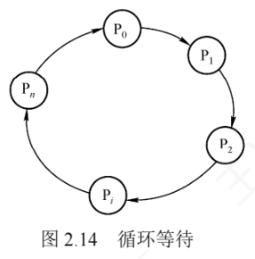
直观上看，循环等待条件似乎与死锁的定义如出一辙，实则不然——资源分配图中存在环，并不必然意味着死锁。根本原因在于：当某类资源有多个实例时，即使图中出现环，系统仍可能通过资源的重新流转化解僵局。如图2.15 所示，若输出设备有两个实例，分别被进程 P0 和 Pk（\(k \in \{0,1,\dots,n\}\)）持有，当 Pn 请求一台输出设备时，只要 P0 或 Pk 中任意一个释放自己手中的设备，Pn 即可获得所需资源，等待环随之解开。
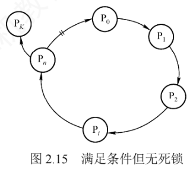
因此：只有当系统中每类资源都仅有一个实例时，资源分配图中出现环才是死锁的充分必要条件；否则，环的存在只说明系统有潜在风险，未必真的发生了死锁。
5. 死锁的处理策略
处理死锁主要有三种策略：一是通过协议预防或避免死锁，确保系统永不进入死锁状态；二是允许死锁发生，但系统能够检测并解除；三是完全忽略死锁问题，假定它不会出现。其中第一种策略包含预防死锁和避免死锁两种方法，第二种策略包含检测及解除死锁方法，第三种策略则被大多数通用操作系统（如 Linux 和 Windows）所采用。三种策略的具体含义如下：
- 预防死锁。通过设置严格的限制条件，破坏死锁四个必要条件中的一个或多个，从根源上杜绝死锁发生的可能。
- 避免死锁。在资源动态分配的过程中，用特定算法判断分配后系统是否仍处于安全状态，只在整个仍安全时才实施分配，从而避免系统进入可能导致死锁的不安全状态。
- 检测及解除死锁。不施加任何预防性限制，允许进程自由申请资源；系统定期运行检测算法，一旦发现死锁，便采取措施（如终止部分进程、剥夺其资源）予以解除。
预防与避免都属于事前防范策略：死锁预防的限制条件较严格、实现相对简单，但往往导致系统效率和资源利用率偏低；死锁避免的限制条件相对宽松，但每次分配前都要运行算法判断安全性，实现较为复杂。三种策略的详细对比如表2.5 所示：死锁预防采取「保守、宁可资源闲置」的分配策略（一次性申请全部资源、剥夺、按序分配），无须运行时检测、实现简单，但资源利用率低、剥夺可能很频繁、不适用于动态请求；死锁避免是预防和检测的折中，每次分配前寻找可能的安全允许顺序，无须剥夺资源、利用率较高，但须预知最大资源需求，进程也可能因长期不安全而被无限期推迟；死锁检测最为宽松，只要允许就分配资源，定期检测、发现后解除，不限制申请、无启动延迟、支持灵活分配，但检测与解除有额外开销，终止或剥夺进程可能导致已完成的工作丢失。
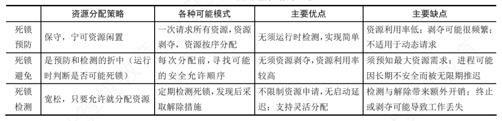
2.4.2 死锁预防
预防死锁的发生，只需破坏死锁四个必要条件中的任何一个即可。下面逐条讨论破坏各条件的可行性与代价。
1. 破坏互斥条件
若能把原本只能互斥使用的资源改造成允许多个进程共享访问，互斥条件即被破坏，死锁自然无从谈起。然而，打印机、磁带机等许多临界资源本质上不支持并发访问，强行共享会导致数据不一致或设备冲突，而互斥性恰恰是保障系统正确性的基本要求。因此，破坏互斥条件在实践中通常并不可行。
2. 破坏不可剥夺条件
约定：当一个已占有若干不可剥夺资源的进程请求新资源而得不到满足时，它必须释放已占有的全部资源，待以后需要时再重新申请——相当于资源被临时剥夺，从而破坏不可剥夺条件。
该策略实现复杂且代价高昂：对打印机这类不可剥夺的外部设备而言，中途强制释放可能导致已完成的打印工作作废，甚至引发设备状态混乱；而频繁地申请与释放也会显著增加系统开销，延长进程周转时间、降低吞吐量。因此，这种方法在实际系统中极少采用。
3. 破坏请求并保持条件
要求进程在请求新资源时不得持有任何不可剥夺资源，可采用两种实现方式：
- 静态资源分配（一次性申请全部资源）。进程运行前一次性申请所需的全部资源：若系统满足，则一次性分配给它；若无法满足，进程暂不投入运行。运行期间进程不再提出新的请求，从根本上杜绝了「一手拿资源、一手要资源」的行为。
- 动态「释放后申请」。作为对方式一的改进：进程获得初期所需资源后即可开始运行；但在运行过程中，必须先释放所有自己已用完的资源，才被允许申请新资源。
方式一实现简单，但缺点明显：①资源浪费严重——进程在运行初期就占有全部所需资源，其中部分资源可能要到运行末期才使用、甚至从未被使用，长期闲置；②容易引发饥饿——某些资源被个别进程长期整体占有，等待这些资源的其他进程可能迟迟无法启动。
4. 破坏循环等待条件
采用资源有序分配法：为系统中每类资源规定一个唯一的编号，进程申请不同类资源时必须按编号递增的顺序进行，同类资源则须一次性申请。换言之，只有在未持有任何资源、或已持有资源的编号都较小时，进程才允许申请更大编号的资源。这样一来，任何已持有大编号资源的进程都无法再申请小编号资源，资源分配图中便不可能出现环，从结构上杜绝了死锁。
该方法的缺点：①资源编号需要相对稳定，不便于新增设备类型；②编号时虽已尽量照顾多数进程的使用习惯，但实际使用顺序仍可能与编号次序不一致，导致资源被提前占用而长期闲置、造成浪费；③强制按固定次序申请资源，增加了用户编程的负担。
2.4.3 死锁避免
死锁避免不追求「事先立规矩」，而是在每次分配资源时动态判断：这次分配是否可能引发死锁？只有在确认不会导致死锁的情况下才予以分配。由于施加的约束较为宽松，死锁避免能取得较好的系统性能。
1. 系统安全状态
在死锁避免机制下，系统允许进程动态申请资源，但每次分配前必须先评估这次分配的安全性：分配后系统仍处于安全状态才允许分配，否则让进程等待。
所谓安全状态，是指系统存在一个进程执行序列 \(\langle P_1, P_2, \dots, P_n \rangle\)，使得对序列中的每个进程 \(P_i\) 而言：当排在其前面的进程都依次执行完毕并释放所占资源后，系统仍有足够的可用资源满足 \(P_i\) 的尚需资源量（最大需求减去已分配量），从而保证 \(P_i\) 能顺利完成。这样的序列称为安全序列（可能不止一个）。若找不到任何一个安全序列，系统就处于不安全状态。
用一个例子直观理解。系统中有三个进程 P1、P2、P3，共有 12 台磁带机，各进程的最大需求分别为：P1 需 10 台、P2 需 4 台、P3 需 9 台。T0 时刻的资源分配情况如表2.6 所示。
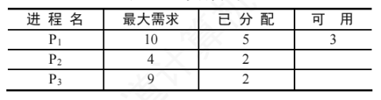
T0 时刻系统处于安全状态，因为存在安全序列 \(\langle P2, P1, P3 \rangle\)：当前可用 3 台，P2 尚需 \(4-2=2\) 台，可以立即满足，P2 完成后归还其全部 4 台，可用变为 \(3-2+4=5\) 台；P1 尚需 \(10-5=5\) 台，恰好满足，P1 完成后释放 10 台，可用增至 \(5-5+10=10\) 台；P3 尚需 \(9-2=7\) 台，也可满足，顺利完成。
若在 T0 之后系统又把 1 台磁带机分给 P3，则 P3 的已分配量变为 3、尚需 6 台，可用资源降为 2 台。此时再也找不到任何安全序列，系统进入不安全状态。例如把剩余的 2 台分给 P2（其尚需 2 台），P2 虽能完成并释放 4 台，可用变为 4 台，但 P1 尚需 5 台、P3 尚需 6 台，均无法满足——两个进程相互等待对方释放资源，陷入僵局，最终可能死锁。
2. 利用银行家算法避免死锁
银行家算法是最著名的死锁避免算法。其基本思想是：把操作系统看作银行家，系统管理的资源视为银行资金，进程申请资源相当于用户申请贷款。每个进程在运行前必须预先声明对各类资源的最大需求量（该最大需求量在整个生命周期内不得更改，否则算法的安全性保证失效），且总量不能超过系统所拥有的资源总量。进程运行中申请资源时，系统先检查当前是否有足够资源可供分配；若有，再进一步试探：把这些资源分给它之后，系统是否仍处于安全状态？只有在确保安全的前提下才正式分配，否则让进程等待。
（1）银行家算法中的数据结构
设系统中有 \(n\) 个进程和 \(m\) 类资源，银行家算法需要维护以下四个数据结构：
- 可利用资源向量 Available：长度为 \(m\) 的向量，每个分量代表一类资源的可用数量。Available[i] = K 表示当前有 K 个 Ri 类资源可用。
- 最大需求矩阵 Max：\(n \times m\) 矩阵，定义每个进程对 \(m\) 类资源的最大需求。Max[i,j] = K 表示进程 Pi 对 Rj 类资源的最大需求量为 K。
- 分配矩阵 Allocation：\(n \times m\) 矩阵，记录当前已分配给每个进程的各类资源数。Allocation[i,j] = K 表示进程 Pi 当前已获得 K 个 Rj 类资源。
- 需求矩阵 Need：\(n \times m\) 矩阵，表示每个进程尚需的各类资源数。Need[i,j] = K 表示进程 Pi 还需要 K 个 Rj 类资源。
后三个矩阵满足如下关系：
$$Need[i,j] = Max[i,j] - Allocation[i,j]$$（2）银行家算法的流程
设 Requesti 是进程 Pi 的资源请求向量，Requesti[j] = K 表示 Pi 请求 K 个 Rj 类资源。当 Pi 发出请求后，系统按以下步骤检查：
① 合法性检查：若 Request_i[j] ≤ Need[i,j]，转②；
否则为出错（申请量超过它先前声明的最大需求）
② 可用性检查：若 Request_i[j] ≤ Available[j]，转③；
否则表示当前无足够资源，P_i 必须等待
③ 试探性分配，修改数据结构：
Available[j] = Available[j] - Request_i[j] //可用资源减少
Allocation[i,j] = Allocation[i,j] + Request_i[j] //P_i 已分配增加
Need[i,j] = Need[i,j] - Request_i[j] //P_i 尚需减少
④ 安全性检查：执行安全性算法，判断试探分配后系统是否仍安全；
安全 → 正式实施这次分配
不安全 → 撤销试探分配，恢复各数据结构的原值，让 P_i 等待
（3）安全性算法
安全性算法用于判断系统当前是否处于安全状态，思路是：尝试构造一个进程执行序列，使所有进程都能依次拿到所需资源并顺利完成。具体步骤如下。
1) 设置两个向量：
Work ：长度为 m 的工作向量，表示当前可提供的各类资源数，
初始时 Work = Available
Finish ：长度为 n 的布尔向量，标记各进程能否顺利完成，
初始时全部置为 false；当 P_i 的资源需求可被满足时置 true
2) 在尚未完成的进程中寻找一个满足以下两个条件的进程 P_i：
Finish[i] = false //尚未加入安全序列
Need_i ≤ Work //其尚需的各类资源数均不超过当前可用资源
找得到 → 转 3)；找不到 → 转 4)
3) P_i 获得所需资源后可顺利执行完毕，并归还其占有的全部资源：
Work = Work + Allocation_i //回收其已分配的各类资源
Finish[i] = true //将其加入安全序列
返回 2)，继续寻找下一个可完成的进程
4) 若所有进程都有 Finish[i] = true，则系统处于安全状态；
否则系统处于不安全状态
3. 安全性算法举例
假定系统中有 5 个进程 \(\{P_0, P_1, P_2, P_3, P_4\}\) 和 3 类资源 \(\{A, B, C\}\)，三类资源的总量分别为 10、5、7。T0 时刻的资源分配情况见表2.7。现利用安全性算法判断系统此时是否处于安全状态。
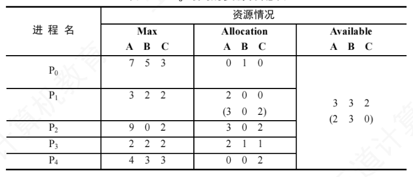
① 由 Max 和 Allocation 计算 Need 矩阵（Need = Max − Allocation）：
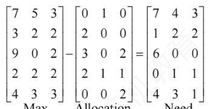
即各进程尚需资源为：P0 (7,4,3)、P1 (1,2,2)、P2 (6,0,0)、P3 (0,1,1)、P4 (4,3,1)。
② 初始化 Work = Available = (3,3,2)，将 Work 与 Need 的各行逐一比较，寻找满足 Need ≤ Work（每个分量都不超过）且尚未完成的进程：P1 (1,2,2) ≤ (3,3,2)，P3 (0,1,1) ≤ (3,3,2)，P1 和 P3 都满足条件，此处选 P1（选 P3 也可以）作为安全序列的第一个进程。
③ 把 P1 加入安全序列并模拟其顺利完成：回收它占有的资源，更新工作向量 Work = Work + Allocation[1] = (3,3,2) + (2,0,0) = (5,3,2)，并标记 Finish[1] = true。
用更新后的 Work = (5,3,2) 重复上述过程，依此类推，整个分析过程如表2.8 所示（表中「Work+Allocation」列即下一步的 Work 值），最终构造出完整的安全序列 \(\{P_1, P_3, P_4, P_2, P_0\}\)，表明系统在 T0 时刻处于安全状态。逐行读一遍：Work=(5,3,2) 时 P3 (0,1,1) 可满足，回收后 Work=(5,3,2)+(2,1,1)=(7,4,3)；接着 P4 (4,3,1) 可满足，回收后 Work=(7,4,3)+(0,0,2)=(7,4,5)；接着 P2 (6,0,0) 可满足，回收后 Work=(7,4,5)+(3,0,2)=(10,4,7)；最后 P0 (7,4,3) 可满足，回收后 Work=(10,4,7)+(0,1,0)=(10,5,7)，全部进程 Finish 均为 true。
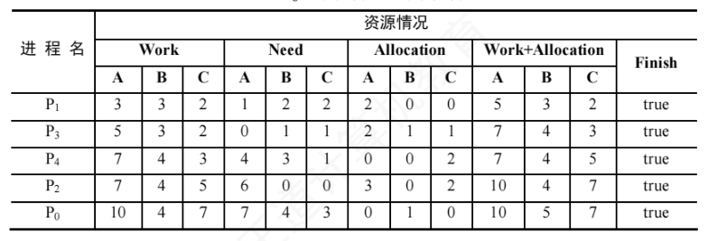
4. 银行家算法举例
安全性算法是银行家算法的核心。典型考题会给出某进程的资源请求向量：只需执行银行家算法的前三步（合法性检查、可用性检查、试探性分配），得到更新后的 Allocation 和 Need，再按上一节的安全性算法判断系统是否仍安全，即可决定是否批准该请求。仍以表2.7 的 T0 状态为初始状态，分析三个请求。
1）进程 P1 发出请求向量 Request1(1,0,2)，系统按银行家算法检查：
- 合法性检查：Request1(1,0,2) ≤ Need1(1,2,2)，成立；
- 资源可用性检查：Request1(1,0,2) ≤ Available(3,3,2)，成立；
- 试探性分配，修改数据结构：
由此形成的资源变化即表2.7 中圆括号所示的值。Available = Available - Request1 = (3,3,2) - (1,0,2) = (2,3,0) Allocation1 = Allocation1 + Request1 = (2,0,0) + (1,0,2) = (3,0,2) Need1 = Need1 - Request1 = (1,2,2) - (1,0,2) = (0,2,0) - 安全性检查：令 Work = Available = (2,3,0)，执行安全性算法，过程如表2.9 所示。
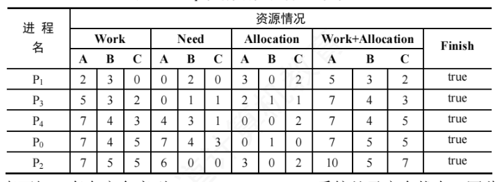
由表可知存在安全序列 \(\{P_1, P_3, P_4, P_0, P_2\}\)，系统处于安全状态，因此可以正式将 P1 请求的资源分配给它。分配后系统的资源状态如表2.10 所示。
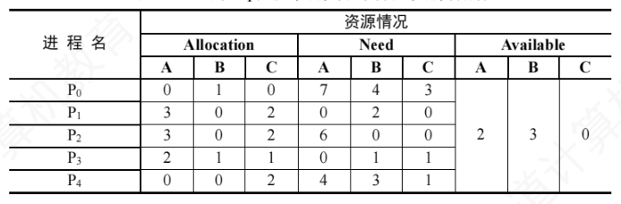
2）P4 发出请求向量 Request4(3,3,0)，系统按银行家算法检查：
- 合法性检查：Request4(3,3,0) ≤ Need4(4,3,1)，成立；
- 资源可用性检查：Request4(3,3,0) > Available(2,3,0)，不成立——当前资源不足，让 P4 等待（注意：此时尚未做任何试探分配，各数据结构不变）。
3）P0 发出请求向量 Request0(0,2,0)，系统按银行家算法检查：
- 合法性检查：Request0(0,2,0) ≤ Need0(7,4,3)，成立；
- 资源可用性检查：Request0(0,2,0) ≤ Available(2,3,0)，成立；
- 试探性分配，修改数据结构：
结果如表2.11 所示。Available = Available - Request0 = (2,3,0) - (0,2,0) = (2,1,0) Allocation0 = Allocation0 + Request0 = (0,1,0) + (0,2,0) = (0,3,0) Need0 = Need0 - Request0 = (7,4,3) - (0,2,0) = (7,2,3)
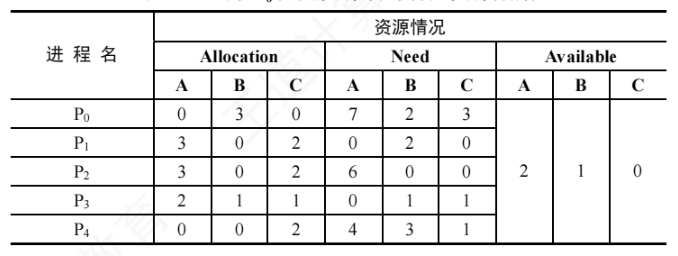
④ 安全性检查：此时 Available(2,1,0) 无法满足任何进程的尚需资源（P0 尚需 (7,2,3)、P1 尚需 (0,2,0)——B 类差 1 个、P2 尚需 (6,0,0)、P3 尚需 (0,1,1)、P4 尚需 (4,3,1)），找不到安全序列，系统进入不安全状态。因此拒绝 P0 的请求，撤销试探性分配，把各数据结构恢复到分配前的状态。
2.4.4 死锁检测与解除
前面介绍的死锁预防和避免算法，都要在分配资源时施加限制条件或进行安全性检查。若系统在资源分配时不采取任何预防或避免措施，就必须提供死锁检测与解除机制作为兜底。
1. 死锁检测
通常采用资源分配图来检测系统是否处于死锁状态。图中：圆圈表示进程，矩形框表示一类资源，若该类资源有多个实例，则在框内用若干圆点表示；请求边（从进程指向资源框）表示该进程申请一个单位的该类资源；分配边（从资源框中的圆点指向进程）表示该类资源的一个实例已分配给该进程。图2.16(a) 中，进程 P1 已获得两个 R1 资源、并请求一个 R2；P2 已获得一个 R1 和一个 R2、并请求一个 R1。图中存在环，但还不能就此断定死锁。
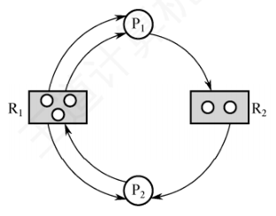
判断死锁需要简化资源分配图，步骤如下：
- 在图中找出一个非阻塞（可继续执行）的进程 Pi：它的所有资源请求都能被当前空闲资源满足。某类资源的空闲数量等于该类资源总数减去已分配的实例数（即资源框发出的分配边数）。以图2.16(a) 为例：R1 总数为 3、发出的分配边为 3，故空闲 0 个；R2 总数为 2、发出的分配边为 1，故空闲 1 个。P1 只请求 1 个 R2，而 R2 恰有 1 个空闲，因此 P1 可继续执行。将 P1 的所有请求边和分配边删除，使其成为孤立节点，得到图2.16(b)。
- Pi 释放的资源可能使其他原本阻塞的进程的请求得到满足，从而转为可继续执行——如 P1 释放所占的 R1 后，P2 对 R1 的请求即可满足，P2 也能继续执行。重复上述过程：若最终能删除图中所有边，则称该图是可完全简化的，如图2.16(c)；若图中始终剩有无法删除的边，则不可完全简化。
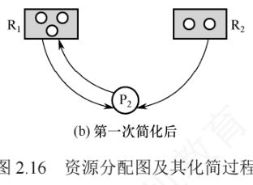
死锁定理：系统处于死锁状态，当且仅当该系统的资源分配图不可完全简化。
2. 死锁解除
一旦检测出死锁，系统应立即采取措施予以解除，主要方法有三种：
- 资源剥夺法。挂起（抢占）某些死锁进程，夺取它们的资源并重新分配给其他死锁进程，以打破死锁环路。但要注意防止被挂起的进程因长期得不到资源而陷入饥饿。
- 撤销进程法（终止进程法）。强制终止部分甚至全部死锁进程并回收其资源。终止顺序可依据进程优先级或撤销代价（如已占资源量等）确定。该方法实现简单，但代价可能很高——若进程已接近完成时被终止，此前完成的工作将全部丢失，只能从头再来。
- 进程回退法。让一个或多个死锁进程退回到足以避开死锁的某个历史状态，回退过程中自愿释放所占资源。系统必须记录进程的历史信息、设置还原点，实现较为复杂。
2.4.5 本节小结
开头提出的两个问题，参考答案如下。
1）为什么会产生死锁？产生死锁有什么条件？死锁是指多个进程因竞争不可剥夺资源而陷入永久阻塞：每个进程都占有部分资源，同时又等待其他进程占有的资源，导致所有相关进程都无法继续推进。死锁的产生必须同时满足四个必要条件：①互斥条件——资源在任一时刻只能被一个进程占有；②不可剥夺条件——进程已获得的资源在使用完毕前不能被强行收回，只能由其主动释放；③请求并保持条件——进程占有资源的同时可以申请新资源，若新资源暂时得不到便阻塞等待，但不会释放已占有的资源；④循环等待条件——存在一个由多个进程构成的循环等待链，链上每个进程都在等下一个进程所占有的资源。
2）有什么办法可以解决死锁问题？死锁的处理策略分为三类：①死锁预防——通过限制资源分配方式，破坏四个必要条件中的某一个，从根源上防止死锁发生；②死锁避免——在动态分配资源的过程中，用安全性算法判断系统是否仍处于安全状态，只有分配后仍然安全才批准请求（典型算法为银行家算法），从而避免进入可能导致死锁的不安全状态；③死锁检测与解除——不对资源申请施加限制，允许死锁发生，定期检测系统是否已死锁，一旦发现便予以解除，例如剥夺部分死锁进程的资源、终止或回退部分死锁进程。